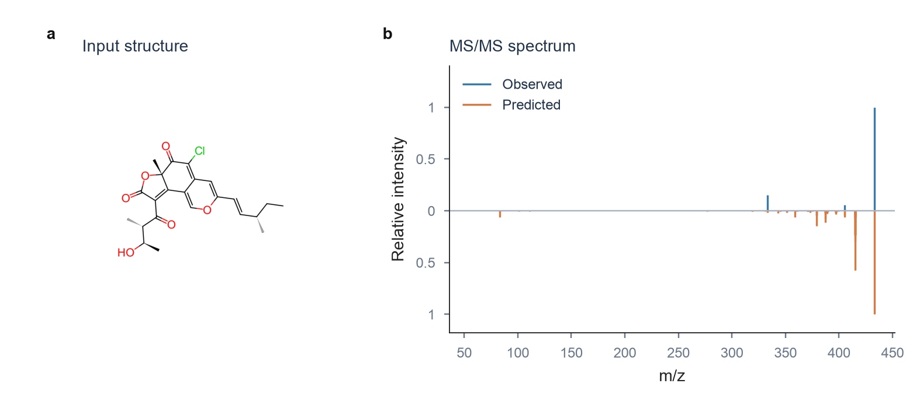
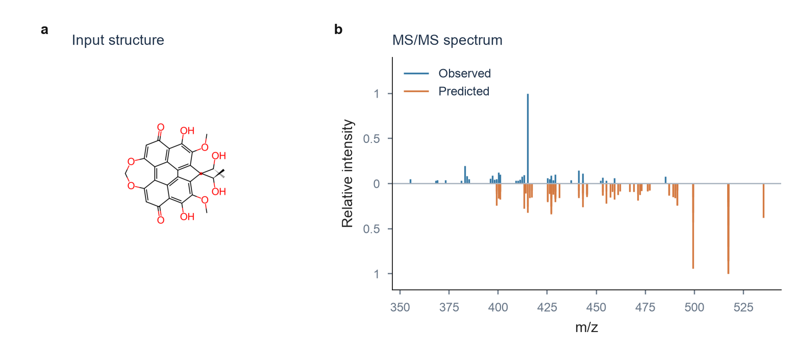

MS/MS prediction with GLACIER
Predict the fragment masses and intensities of a molecule under specified acquisition conditions.
Independent confirmation
Calibration settings were fixed using five-fold validation on 280 scored molecules. A further 1,024 MassSpecGym test connectivities were sampled, excluding all 384 structures in the first test. 875 had scoreable paired predictions and 149 were skipped. Mean cosine was 0.6009 for the original checkpoint and 0.6039 for the candidate. The paired 95% interval for the change was [+0.0005, +0.0056]. The released predictor applies the selected relative-intensity settings under the evaluated conditions. The SDK can reproduce the original output with author_baseline=True. Calibration covers the tested checkpoint and structures with up to 40 heavy atoms. Reproduce the confirmation with one CPU thread (--threads 1), as used by the public model. Paired comparison
Validation and held-out comparison
GLACIER was evaluated with 189 combinations of intensity scaling, precursor weighting and retained peak count. Of 384 sampled structures per MassSpecGym split, 280 validation and 327 test structures produced a scored prediction. On those same 327 test structures, mean cosine was 0.5828 for the default and 0.5831 for the validation-selected setting. The paired 95% interval for the difference was [-0.0044, 0.0051]. The original model was retained after this first comparison.
What goes in
Field |
Meaning |
|---|---|
|
Molecular structure and ion/adduct, e.g. the actual [M+H]+ or [M+Na]+ in the record. |
|
Collision energy and instrument settings supported by the model. |
|
Recorded precursor m/z; input conventions follow the author interface. |
What comes out
Field |
Meaning |
|---|---|
|
Pairs of m/z and relative intensity; figures retain the top 100 predicted peaks. |
|
Cosine/entropy similarity to all observed reference peaks, with skipped records counted. |
A real recorded example
Inspect the input, prediction and reference for the example below. Download the JSON for the complete numerical arrays and additional examples.

SVG · PNG · Full input/output JSON


Example 2

Example 3

Inspect the actual input and output fields
{
"input": {
"smiles": "CC(C)(C)c1ccc(C(=O)CCCN2CCC(OC(c3ccccc3)c3ccccc3)CC2)cc1",
"adduct": "[M+H]+",
"collision_energy": "40.0",
"instrument": "QTOF",
"precursor_mz": 470.3054
},
"sample_id": "MassSpecGymID0028855",
"output": {
"predicted_peaks_top100": {
"length": 100,
"first_values": [
[
55.05422667404919,
0.0020994183141738176
],
[
57.069876707999995,
0.008048541843891144
],
[
70.065125676,
0.0050727734342217445
],
[
82.06512569102459,
0.0035072911996394396
]
]
}
},
"reference": {
"observed_peaks": {
"length": 14,
"first_values": [
[
152.0611,
0.036036036036036036
],
[
161.0953,
0.1831831831831832
],
[
162.0985,
0.021021021021021023
],
[
165.069,
0.04104104104104104
]
]
}
},
"metrics": {
"cosine_similarity": 0.8689625892568168,
"entropy_similarity": 0.7960058641892032,
"predicted_nonzero_bins": 100,
"reference_nonzero_bins": 14
}
}
Actual evaluation results
Dataset / scope |
Model / variant |
Metric |
Value |
|---|---|---|---|
recorded evaluation |
recorded model |
cosine_similarity |
0.485717 |
recorded evaluation |
recorded model |
entropy_similarity |
0.41328 |
Model and method
GLACIER takes the molecular structure, adduct, collision energy and instrument. Its fragment and intensity components produce a numerical MS/MS peak list.
Compare the predicted and measured spectra using cosine and entropy similarity.
Reproduce
Notebook with executed figures · Quick Start
python -m openmolspec_bench run --workspace /path/to/OpenMolSpec \
--tasks ms.forward.glacier --limit 8 --output results/ms-forward-glacier-new.json
Call and adapt this model
from openmolspec.model import MSPredictor
model = MSPredictor(model='glacier', source='/path/to/ms-pred',
weights='/path/to/weights', python='/path/to/ms-env/bin/python')
result = model.predict(smiles=smiles, adduct='[M+H]+',
collision_energy=20., instrument='Orbitrap')
Fine-tune using the author training modules. Build molecule-disjoint splits with structures, acquisition conditions, measured peak intensities and the fragment targets required by the chosen architecture. ICEBERG exposes ms_pred.iceberg.train_gen and ms_pred.iceberg.train_inten; GLACIER exposes ms_pred.glacier.train_joint and contrastive joint training. Inspect each entry’s --help and the released configuration before launching. ICEBERG fragment generation uses binary cross-entropy over valid atom decisions; its intensity module supports cosine or entropy objectives. GLACIER joint/contrastive losses depend on its configuration; preserve the selected variant when reporting fine-tuning. Here m is the scheduled MAGMa weight, w_I and w_F are configured loss weights, and fragment supervision combines matched atom-membership and fragment-cardinality cross-entropy. The contrastive variant additionally uses its configured decoy objective.
Source reports and SHA-256 fingerprints
ms_glacier_32_molecules_20261116.json — SHA-256
a4d084c72c7df758f49500942cdfcea91047cb3da3616b9adb93b5bc6e8470c6
References
Wang, R.-X., Wang, R. & Coley, C. W. GLACIER: Rethinking Mass Spectrum Prediction as an Object Detection Problem. NeurIPS 2026. arXiv:2606.29161 (2026). Source
Bushuiev, R., Bushuiev, A., de Jonge, N. F., Young, A., et al. MassSpecGym: A benchmark for the discovery and identification of molecules. Advances in Neural Information Processing Systems 37, Datasets and Benchmarks Track (2024). arXiv:2410.23326. Source